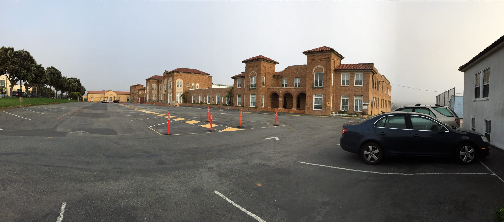
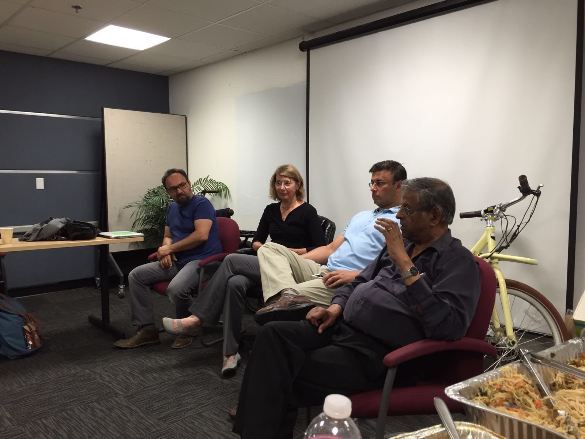
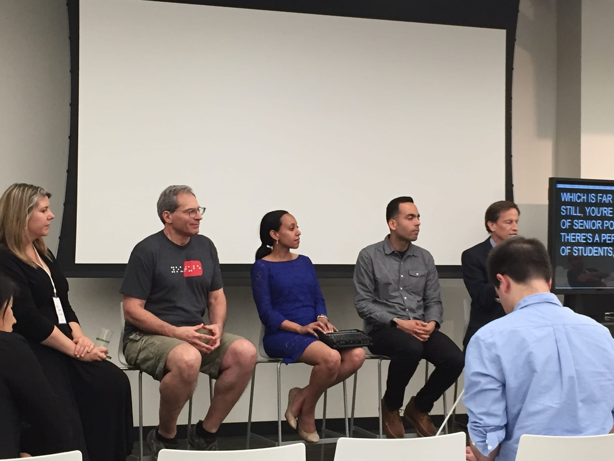
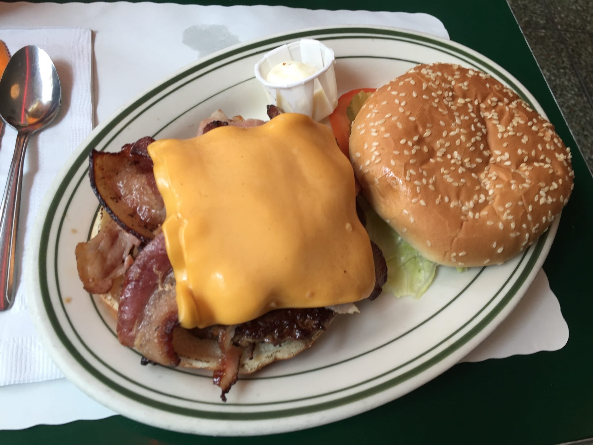
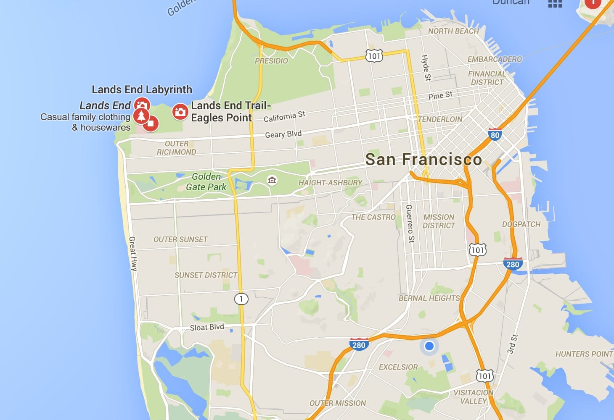
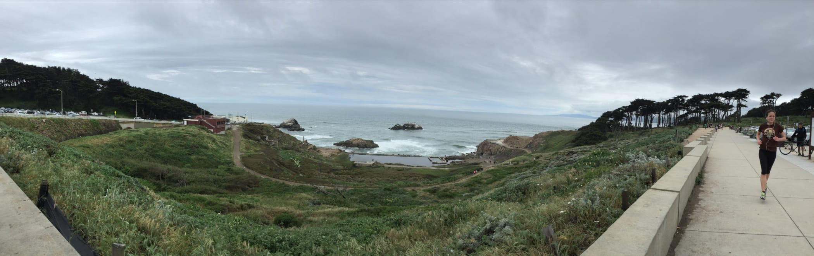

Friday, 8 April 2016 at 9:11 PM
Weekly Log #2
It’s my second week in SF. Here’s another log of my time here!
The hostel

I finally have a shot of the place I’m staying at. It’s called Cornerstone Academy, and comprises of a hostel, a school, and a church. There’s three branches (not sure if that’s the correct term) of it, one on Silver Ave, one on Cambridge St and another on Lawton St.
UserTesting
Boot camp
We had boot camp at work on Monday and Tuesday, where our colleague Benjamin Russo led us on an orientation program to the company, its product, and our colleagues.
Ruby on Rails
Other frameworks
I’ve dealt with a similar framework before, namely ASP.NET, which was pretty slow unless you ran a dedicated server. Ruby on Rails is much faster than ASP, but there is still a slight delay when you start the server. Another language/framework
I’ve used, Go with its built-inhtml/template package, is even faster especially when compiled as a static native binary.
One great thing with Rails is the reloading feature - not only are changes in your HTML/CSS/JS updated without requiring a server restart, but even Ruby code is updated! That is something certainly nearly impossible with a compiled language like Go.
Let the magic do the work
I guess that I’m just not a big fan of Rails’ automatic handling of many things. In the controllers, you can access variables like session and cookie directly. Unless you are a very experienced Rails developer, these would not occur naturally,
and I stumble quite a bit when these variables can be called out of thin air. It’s kind of like ES5’s this parameter, where half the time you aren’t quite sure what this is pointing to. However, I guess I’ll like
it a bit more as I become more familiar with it 😄.
Templating engines
I thought that I would just mention this. Rails uses a variety of such engines, with the common ones being ERB and HAML. Both allow you to define HTML elements, like as follows:
# ERB
<p>Product Name: <%= product.name %></p>
# HAML
%p
Product Name: #{product.name}
Go comes with a built-in html/template package:
<p>Product Name: {product.name}</p>
These templating engines are extremely close to the original HTML element and do not introduce too many elements or controls of its own.
ASP.NET, on the other hand introduces too many of such controls. Obviously, they eventually are delivered to the browser client as valid HTML, but they make the source code and the eventual product so different it becomes extremely difficult to do debugging. Some of these controls even require client-side redirects or form submissions to work, which makes the codebase unnecessarily complicated. Furthermore, from my past experience working with ASP, once in a while you find yourself implementing one of these controls even though a client-side Javascript solution would solve the problem easily.
<asp:RequiredFieldValidator ID="rfvcandidate"
runat="server" ControlToValidate ="ddlcandidate"
ErrorMessage="Please choose a candidate"
InitialValue="Please choose a candidate">
</asp:RequiredFieldValidator>
TL:DR: Stay away from ASP. Most of the world has already done so, anyway.
Kaneshka’s bikes

We had a meetup/networking event with some other NP students at the Plug and Play Tech Centre. We had a good talk with Kaneshka, in which he talked about his past and the present, working on his electric bikes. In the photo above: Kaneshka (Biruni Bikes), Jenny, Shastri (Newzsocial), and Peter.
Video Production Meetup

On Thursday, we went for a video production meetup with Harry, where the speakers talked about adding accessibility to videos for the disabled. Haben and Rick talked a bit on their disabilities and the tool they use for communication (a digital braille device, which can be seen being held by Haben). Ben and Ken talked about some accessibility-enabling technologies such as HTML5 captioning support and the machine transcription Google built into YouTube.
Pictured above: Ann Cannon (SDI Media), Ken Harrenstein (Google), Haben Girma (White House Champion of Change), Ben Cruz (Google) and Rick Boggs (Actor, musician and entrepreneur). The guy in blue is the epic dude who types out everything he hears in real-time, which is displayed on the screen. He does this for Haben to understand what’s going on through her braille device.
On Friday, we went to the Social Security office and applied for an Social Security number.
Saturday
We went to Union Square, which is a well-known shopping district. Over here, you’d find the San Francisco Apple Store, Moscone Center (where Apple hosts all their events), and many flagship stores, from brands such as Levi’s and Nike.

We ate at Mel’s Drive-In for lunch, which is an iconic American diner that serves really great (and huge!) burgers. Apparently there’s a fake rip-off in Singapore’s Universal Studios.
Sunday

We went to Point Lobos and Land’s End, which is really what it is - it’s an area near the north-west end of the city. Google Maps screenshot here just to illustrate what I mean.

The area faces the Pacific Ocean, which is supposed to be around sub-15°C throughout the year. Because of this, the winds blowing from its direction tend to be rather chilly. It’s also apparently why San Francisco enjoys cool temperatures throughout most of the year, sans a couple of days. Land’s End is a really tranquil place, and its stunning views are a great reward after some tiring biking.
Lunch was Vietnamese Pho, which was really good! While the food prices here are expensive if you consider the exchange rate (i.e. this was around 10+ USD, which translates to around 14 SGD, it’s really just how food is priced here. The food also tends to be of great quality, so I’m not complaining 😁)